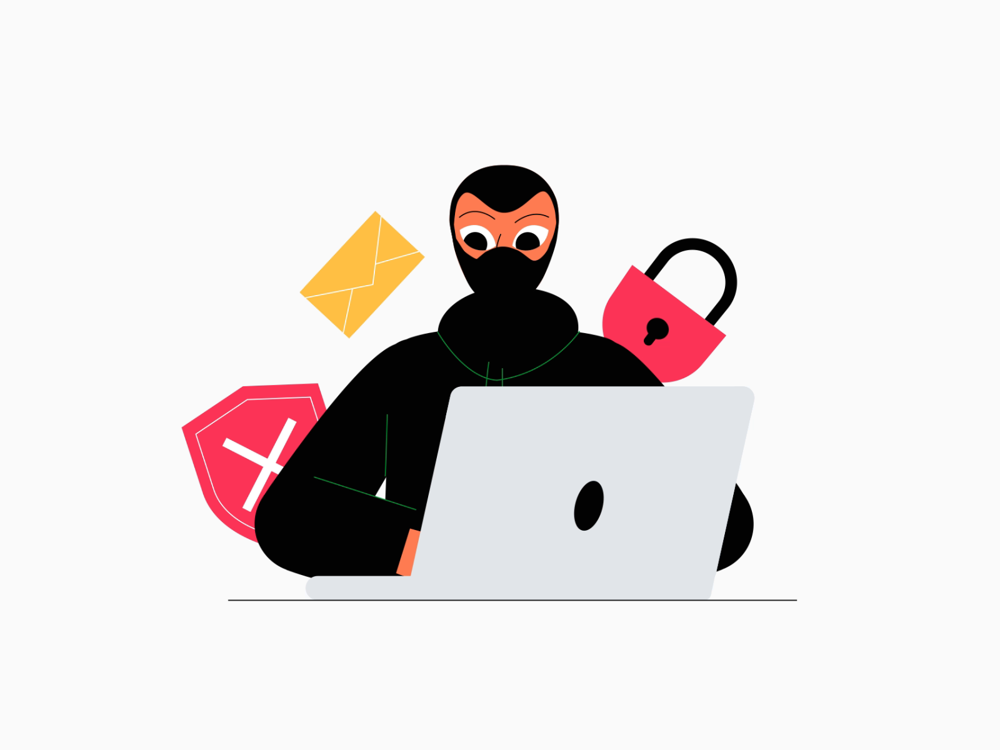
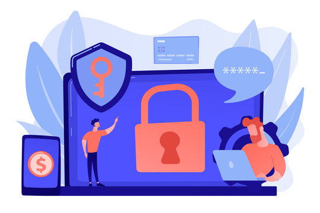

Cyber security atau Keamanan Siber
ditulis oleh Dian Astri. pada 21 oktober 2023.

Ada begitu banyak aktivitas yang dapat dilakukan secara online atau dalam jaringan. Saat ini internet menjelma menjadi hal yang dapat memberi manfaat serta kemudahan bagi setiap orang. Namun, tak bisa dipungkiri juga bahwa dalam internet tetap ada sebuah kejahatan. Di balik dunia yang mengandalkan komunikasi dan informasi, ternyata dapat memicu terjadinya kejahatan siber (Cyber crime). Cyber crime dapat mengancam bahkan menyerang individu atau kelompok dengan serangan digital, seperti mengakses informasi data pribadi atau menghancurkan data penting.
Apa itu Cyber security?

Keamanan Siber (cyber security) adalah upaya yang dilakukan untuk
melindungi sistem komputer dari berbagai ancaman atau akses.
Cyber security mencakup alat, kebijakan, dan konsep keamanan yang
dapat digunakan untuk melindungi aset organisasi dan pengguna.
Keamanan siber dapat meminimalisir masuknya risiko ancaman ke dalam
sistem komputer.
perlindungan ini dilakukan pada perangkat komputasi, aplikasi, layanan, dan informasi yang dikirimkan serta disimpan di lingkungan siber. Keamanan siber merujuk pada praktik yang memastikan tiga poin penting yang disebut dengan CIA Triad. Ketiga poin tersebut adalah confidentiality (kerahasiaan), integrity (integritas), dan availability (ketersediaan), sebagaimana disebutkan oleh Warkentin & Orgeron dalam buku Pengajaran Berbasis Teknologi Digital karya Sandirana Juliana Nendissa. CIA Triad adalah mode keamanan yang dikembangkan guna membantu manusia dalam memahami berbagai keamanan
Jenis Keamanan Siber
1. Could Security
Malware adalah singkatan dari malicious software merupakan salah satu ancaman siber yang paling umum. Perangkat lunak ini diciptakan untuk mengganggu bahkan merusak komputer. Ancaman ini kerap menyebar melalui lampiran email atau unduhan yang terlihat ilegal. Beberapa jenis malware adalah virus, trojans, spyware, ransomware, adware, dan botnet.
2. Injeksi SQL (Structured Query Language)
Jenis metode ancaman selanjutnya adalah injeksi SQL yang digunakan untuk mengambil kendali serta mencuri data dari pusat data. Kerentanan ini dimanfaatkan oleh penjahat siber dengan memasukkan kode berbahaya pada aplikasi berbasis data melalui pertanyaan SQL. Hal ini dilakukan untuk mencuri informasi pribadi pengguna.
3. Phishing
Umumnya, metode ancaman phising dikirimkan dalam bentuk email resmi perusahaan, tetapi mengandung permintaan terkait informasi sensitif. Ancaman ini digunakan dalam penipuan guna mendapatkan data dan informasi pribadi.
4. Serangan Man-in-the-Middle
Serangan Man-in-the-Middle adalah jenis metode ancaman dalam bentuk penyadapan komunikasi antara dua individu untuk mencuri data. Salah satu contoh ancaman Man-in-the-Middle adalah penggunaan jaringan wi-fi yang tidak aman sehingga memungkinkan penjahat siber menghalangi data yang dikirimkan dari perangkat menuju jaringan korban.
5.Serangan Denial-of-Service
Jenis metode ancaman yang terakhir adalah serangan Denial-of-Service, yakni serangan terhadap jaring internet dengan menghabiskan resource yang dimiliki suatu sistem sehingga fungsinya tidak dapat bekerja dengan benar. Tidak hanya itu, serangan Denial-of-Service secara tidak langsung juga menghambat pengguna lain dalam mengakses layanan sistem yang diserang tersebut.
sumber :
https://www.detik.com/edu/detikpedia/d-6262847/cyber-security-atau-keamanan-siber-pengertian-jenis-dan-ancamannya.